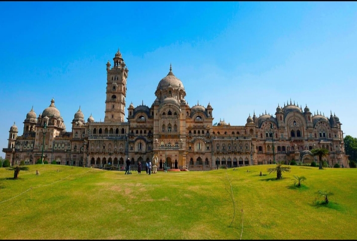
CULTURE & HERITAGE
Vadodara
Explore royal architecture, gardens and the cultural charm of Baroda.
Explore VadodaraDiscover royal palaces, historic monuments, peaceful lakes and the rich culture of Gujarat.
Explore Destinations ↓Discover the famous attractions of Vadodara, Ahmedabad and other places in Gujarat.

Explore royal architecture, gardens and the cultural charm of Baroda.
Explore Vadodara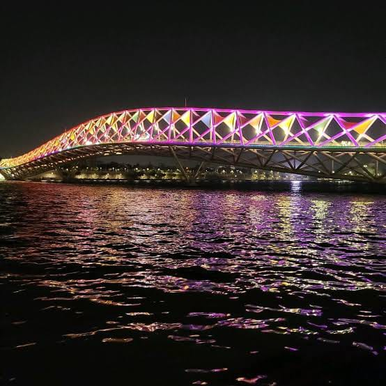
Discover historic landmarks, lively streets and beautiful riverside views.
Explore AhmedabadDiscover the royal heritage and beautiful attractions of Baroda.
A magnificent palace known for its grand royal architecture.
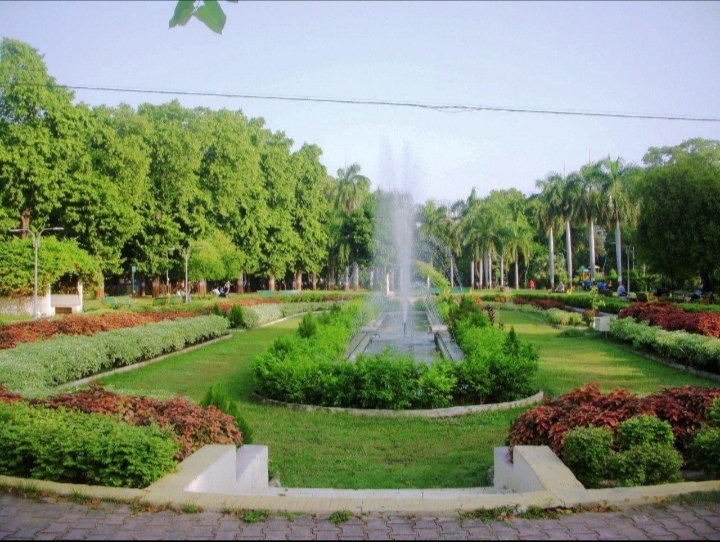
A popular garden with green spaces and family attractions.
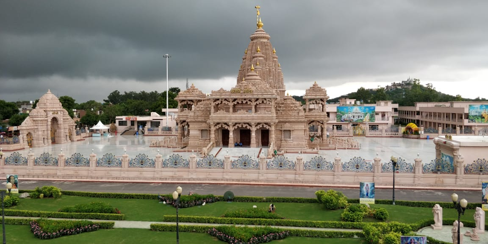
A historic monument associated with the Gaekwad royal family.
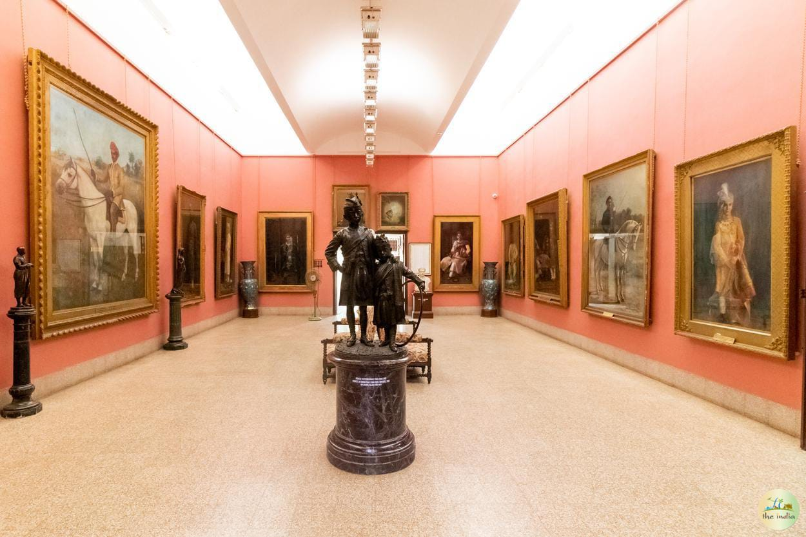
Explore artworks and historical collections.
A theme park offering rides and entertainment.
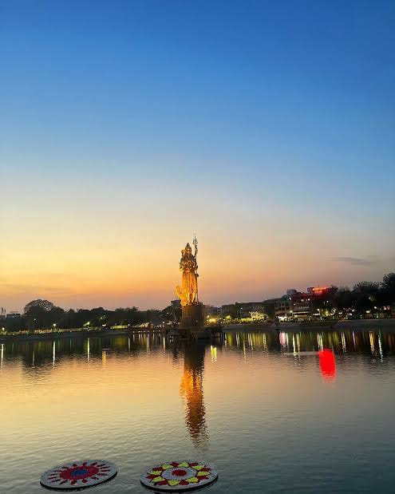
A well-known lake in the heart of Vadodara.
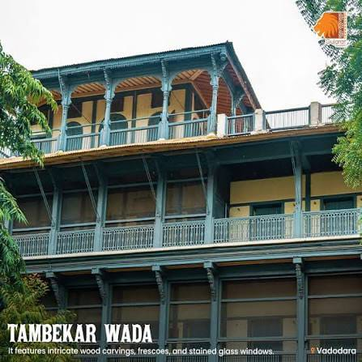
A historic residence known for its traditional architecture.
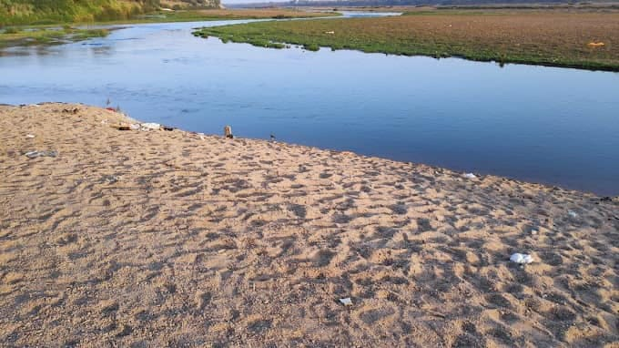
A scenic riverside destination in Gujarat.
Discover historic landmarks, riverside views and architectural treasures.
A popular waterfront for riverside walks and city views.
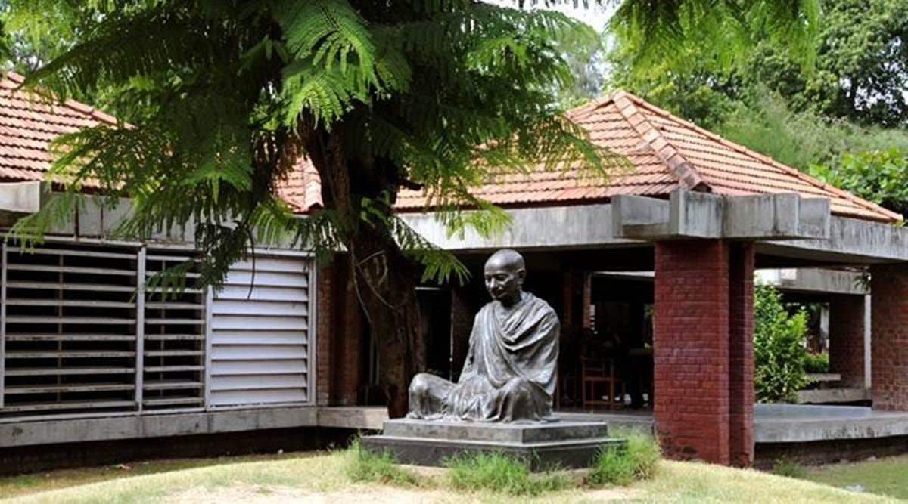
A historic ashram associated with Mahatma Gandhi.
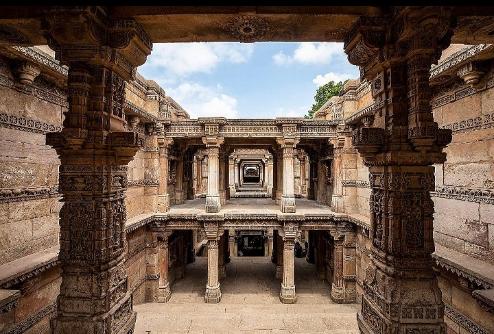
A remarkable stepwell celebrated for its detailed stone carvings.
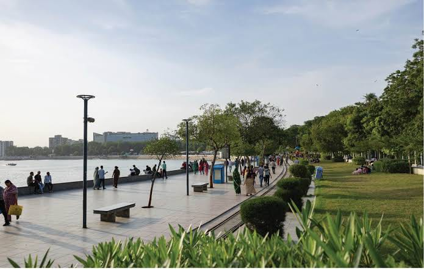
A popular recreational destination with lakeside attractions.
Explore more destinations from your photo collection.
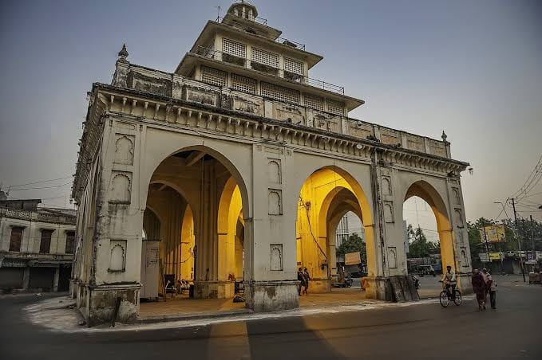
A historic landmark in Vadodara.
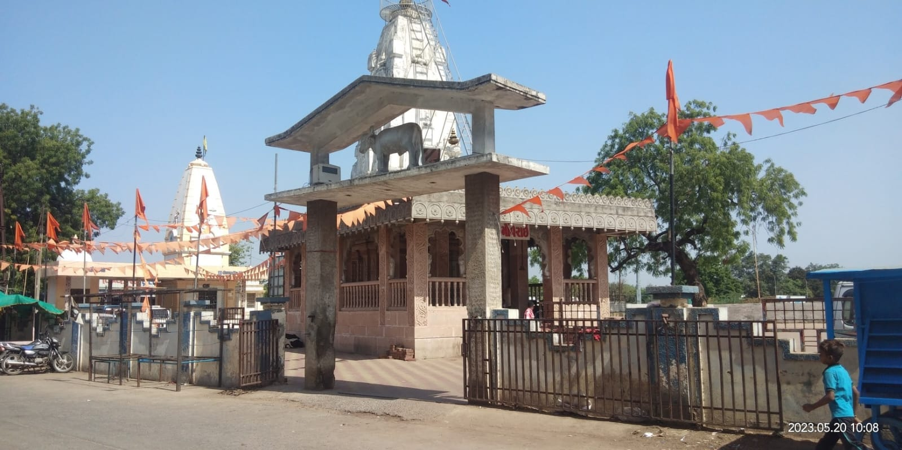
A local destination in Gujarat.
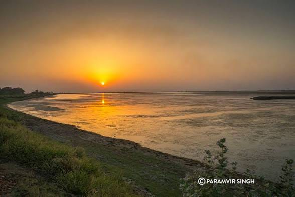
A lake destination in Gujarat.
This tourism website introduces the heritage, culture, architecture and attractions of Gujarat. Explore the photographs and discover places to visit.